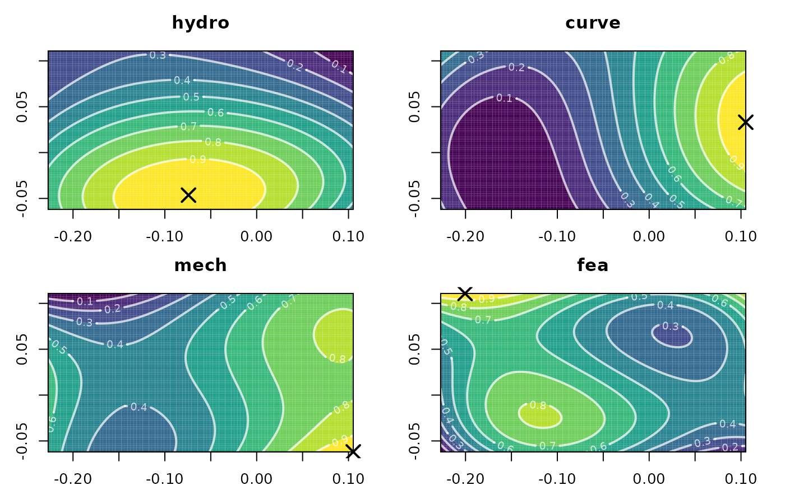

Calculate polynomial fits over a surface
calcPoly.RdcalcPoly calls on the spatial package to fit rectangular spatial polynomial surface models by least-squares, or GLS. These methods allow the user to test whether data have spatial trends in morphospace. Outputs are a polynomial trend surface, and ANOVA table for the model fit. multiPoly applies calcPoly to a fnc_df with outputs for each trait. For more extensive documentation for model fitting see the spatial package.
Usage
calcPoly(fnc, npoly = 3, fnc.name = NULL,
gls.covmod = list(covmod = expcov, d = 0.7, alpha = 0, se = 1),
pad = 1.2, resample = 100, range = NULL, verbose = FALSE)
multiPoly(fnc_df, npoly = 3, ...)Arguments
- fnc
an XYZ dataframe or matrix of a spatially distributed trait.
- fnc_df
a functional dataframe from
as_fnc_dfwith colnames corresponding to X,Y and trait names.- npoly
singular numeric. Degree of polynomial to fit ragning from 1-4. For
multiPolythis can also be a vector with length equal to the numer of traits in order to specify the degree of polynomial to apply to each trait.- gls.covmod
Optional list of arguments to pass to
surf.glsif fitting by generalized least-squares is desired. Defaults to NULL, and fitting is performed by least-squares. Seesurf.glsandexpcovdocumentation for a full list of arguments and usage.- fnc.name
Optional speficiation of the trait name. Defaults to
NULL, and will use column names instead.- pad
Degree by which to extrapolate input data. Defaults to 1.2.
- resample
Resampling density. Corresponds to the number of points calculated along both X and Y axes. Defaults to 100. If no resampling is desired, set
reample = NULL- range
Optional. Manually set X and Y ranges. Input is a 2x2 matrix with rows corresponding to X and Y ranges respectively.
- verbose
Optional. Logical. If
TRUE, will print ANOVA tables.- ...
Arguments to pass onto
calcPolywhen usingmultiPoly
Details
Fits polynomial trend surfaces using the `spatial` package. First, an npoly polynomial trend surface is fit by least squares using surf.ls or generalized least-squares by surf.gls. GLS is fit by one of three covariance functions, exponential (expcov), gaussian (gaucov) or spherical (sphercov) and requires additional parameters to be passed as a list through gls.covmod (see examples). For a full description of arguments and usage see surf.gls and expcov documentation.
The surface is then evaluated using trmat within limits set by input data, or manually using range.
References
Dickson, B.V. and Pierce, S.E. (2019), Functional performance of turtle humerus shape across an ecological adaptive landscape. Evolution, 73: 1265-1277. https://doi.org/10.1111/evo.13747
Examples
require(spatial)
#> Loading required package: spatial
data("warps")
warps_fnc <- as_fnc_df(warps)
# Make single trait dataframe
hydro_fnc <- data.frame(warps_fnc[ ,1:2], warps_fnc[ ,"hydro"])
polysurf <- calcPoly(hydro_fnc)
summary(polysurf)
#> - warps_fnc....hydro..
#> npoly: 3
#> peak:
#> x y z
#> -0.07422549 -0.04639033 1.00000000
#>
#> Analysis of Variance Table
#> Model: (function (np, covmod, x, y, z, nx = 1000, ...) { if (np > 6) stop("'np' exceeds 6") if (is.data.frame(x)) { if (any(is.na(match(c("x", "y", "z"), names(x))))) stop("'x' does not have columns 'x', 'y' and 'z'") if (missing(y)) y <- x$y if (missing(z)) z <- x$z x <- x$x } rx <- range(x) ry <- range(y) .C(VR_frset, as.double(rx[1L]), as.double(rx[2L]), as.double(ry[1L]), as.double(ry[2L])) covmod <- covmod arguments <- list(...) if (length(arguments)) { onames <- names(formals(covmod)) pm <- pmatch(names(arguments), onames, nomatch = 0L) if (any(pm == 0L)) warning("some of '...' do not match") names(arguments[pm > 0L]) <- onames[pm] oargs <- formals(covmod) oargs[pm] <- arguments[pm > 0L] formals(covmod) <- oargs } mm <- 1.5 * sqrt((rx[2L] - rx[1L])^2 + (ry[2L] - ry[1L])^2) alph <- c(mm/nx, covmod(seq(0, mm, mm/nx))) .C(VR_alset, as.double(alph), as.integer(length(alph))) n <- length(x) npar <- ((np + 1) * (np + 2))/2 f <- .spfmat(x, y, np) Z <- .C(VR_gls, as.double(x), as.double(y), as.double(z), as.integer(n), as.integer(np), as.integer(npar), as.double(f), l = double((n * (n + 1))/2), r = double((npar * (npar + 1))/2), beta = double(npar), wz = double(n), yy = double(n), W = double(n), ifail = 0L, l1f = double(n * npar)) if (Z$ifail > 0L) stop("rank failure in Choleski decomposition") if (nx > 1000L) alph <- alph[1L] res <- list(x = x, y = y, z = z, np = np, f = f, alph = alph, l = Z$l, r = Z$r, beta = Z$beta, wz = Z$wz, yy = Z$yy, W = Z$W, l1f = Z$l1f, rx = rx, ry = ry, covmod = covmod, call = match.call()) class(res) <- c("trgls", "trls") res})(np = 3, covmod = function (r, d, alpha = 0, se = 1) { se^2 * (alpha * (r < d/10000) + (1 - alpha) * exp(-r/d))}, x = c(`1` = -0.189222674092978, `2` = -0.189222674092978, `3` = -0.189222674092978, `4` = -0.189222674092978, `5` = -0.133845239206066, `6` = -0.133845239206066, `7` = -0.133845239206066, `8` = -0.133845239206066, `9` = -0.0784678043191536, `10` = -0.0784678043191536, `11` = -0.0784678043191536, `12` = -0.0784678043191536, `13` = -0.0230903694322413, `14` = -0.0230903694322413, `15` = -0.0230903694322413, `16` = -0.0230903694322413, `17` = 0.032287065454671, `18` = 0.032287065454671, `19` = 0.032287065454671, `20` = 0.032287065454671, `21` = 0.0876645003415833, `22` = 0.0876645003415833, `23` = 0.0876645003415833, `24` = 0.0876645003415833), y = c(`1` = -0.0516138896365427, `2` = -0.00363138024603597, `3` = 0.0443511291444708, `4` = 0.0923336385349775, `5` = -0.0516138896365427, `6` = -0.00363138024603597, `7` = 0.0443511291444708, `8` = 0.0923336385349775, `9` = -0.0516138896365427, `10` = -0.00363138024603597, `11` = 0.0443511291444708, `12` = 0.0923336385349775, `13` = -0.0516138896365427, `14` = -0.00363138024603597, `15` = 0.0443511291444708, `16` = 0.0923336385349775, `17` = -0.0516138896365427, `18` = -0.00363138024603597, `19` = 0.0443511291444708, `20` = 0.0923336385349775, `21` = -0.0516138896365427, `22` = -0.00363138024603597, `23` = 0.0443511291444708, `24` = 0.0923336385349775), z = c(`1` = 0.763499188437312, `2` = 0.627384654347192, `3` = 0.486816967049923, `4` = 0.174142264485349, `5` = 0.857732301856784, `6` = 0.752332848053817, `7` = 0.492353717916519, `8` = 0.276414894820345, `9` = 1, `10` = 0.845494217913583, `11` = 0.642508934612232, `12` = 0.38984057122137, `13` = 0.995858044607531, `14` = 0.821012732300195, `15` = 0.471898305561689, `16` = 0.243166139196157, `17` = 0.879545728740752, `18` = 0.701083365008891, `19` = 0.349124619048563, `20` = 0.0758538303088942, `21` = 0.511206057156924, `22` = 0.661975028175644, `23` = 0.281357500482196, `24` = 0), d = 0.7, alpha = 0, se = 1)
#> Sum Sq Df Mean Sq F value Pr(>F)
#> Regression 1.80378676 9 0.200420751 31.79593 8.4249e-08
#> Deviation 0.08824683 14 0.006303345
#> Total 1.89203360 23
#> Multiple R-Squared: 0.9534, Adjusted R-squared: 0.9234
#> AIC: (df = 10) -114.5361
#> Fitted:
#> Min 1Q Median 3Q Max
#> 0.02863 0.30283 0.55810 0.80552 0.99446
#> Residuals:
#> Min 1Q Median 3Q Max
#> -0.10958 -0.04286 -0.02556 0.01876 0.11254
#>
plot(polysurf)
# Fit using gls
polysurf <- calcPoly(hydro_fnc, gls.covmod = list(covmod = expcov, d = 0.7, alpha = 0, se = 1))
if (FALSE) {
summary(polysurf)
}
plot(polysurf)
# Calculate multiple polynomial surfaces
multi_poly <- multiPoly(warps_fnc)
#> polynomials:
#> hydro curve mech fea
#> 3 3 3 3
if (FALSE) {
summary(multi_poly)
}
plot(multi_poly)

# Set manual range
polysurf <- calcPoly(hydro_fnc, range = rbind(range(warps_fnc$x) * 1.2,
range(warps_fnc$y) * 1.4))
polysurf <- calcPoly(hydro_fnc, range = rbind(c(-0.2, 0.12),
c(-0.06, 0.1)) )
if (FALSE) {
summary(polysurf)
}
#
# Adjust polynomial degree
multiPoly(warps_fnc, npoly = 2)
#> polynomials:
#> hydro curve mech fea
#> 2 2 2 2
#> A multi_poly object
#> - functional characteristics:
#> hydro, curve, mech, fea
# Specify multiple degrees
multi_poly <- multiPoly(warps_fnc, npoly = c(2,3,4,3))
#> polynomials:
#> [1] 2 3 4 3
if (FALSE) {
summary(polysurf)
}
plot(polysurf)